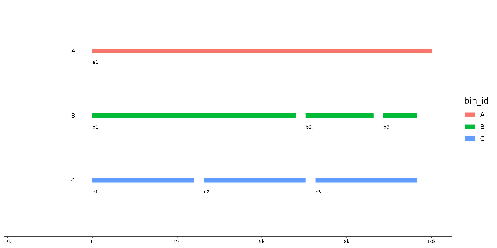
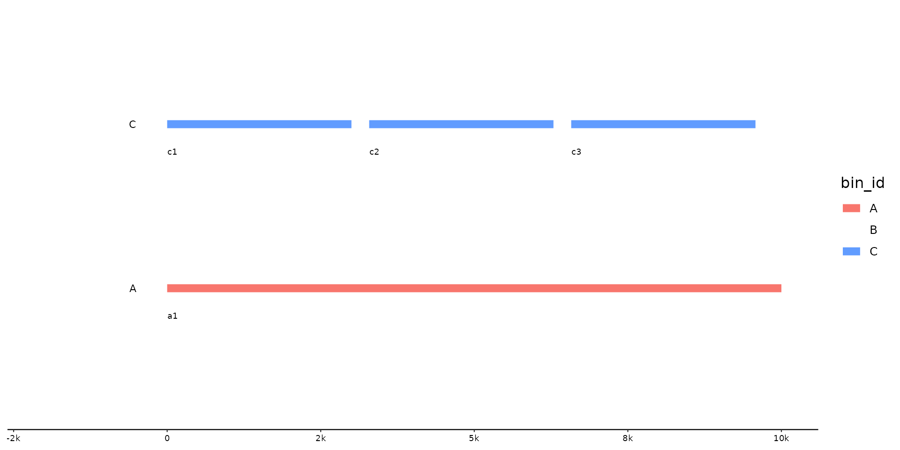
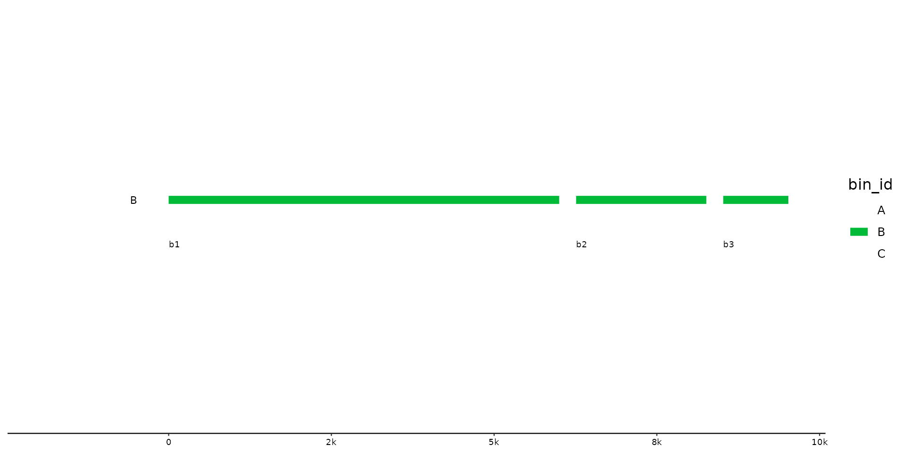
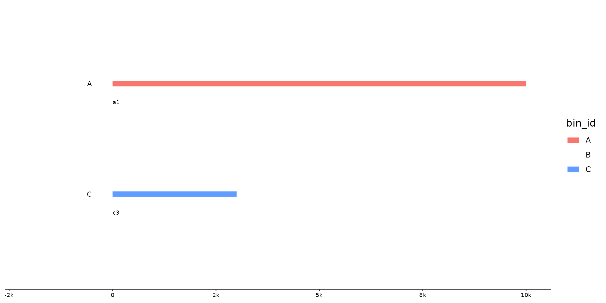
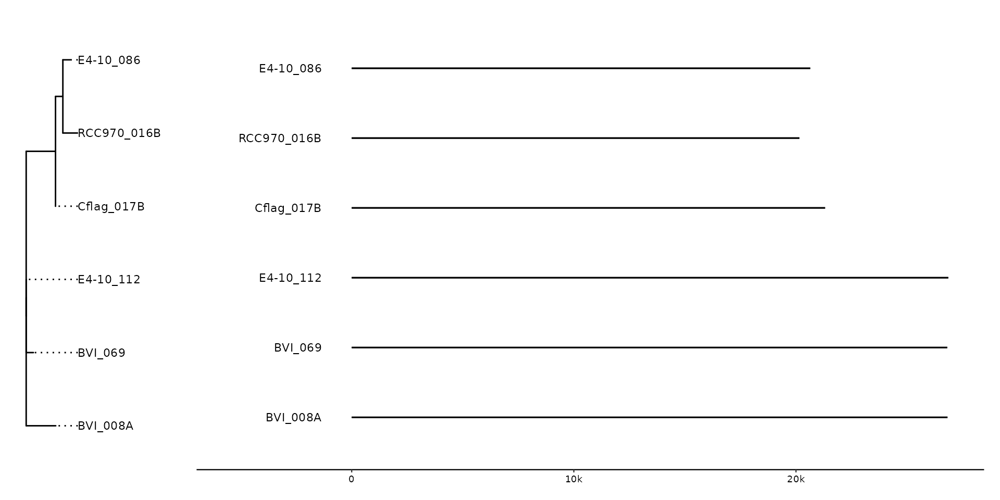

Pick which bins and seqs to show and in what order. Uses
dplyr::select()-like syntax, which means unquoted genome names, positional
arguments and selection helpers, such as
tidyselect::starts_with() are supported. Renaming is not supported.
pick(x, ...) pick_seqs(x, ..., .bins = everything()) pick_seqs_within(x, ..., .bins = everything()) pick_by_tree(x, tree, infer_bin_id = label)
Arguments
| ... | bins/seqs to pick, select-like expression. |
|---|---|
| .bins | scope for positional arguments, select-like expression, enclose
multiple arguments with |
| tree | a phylogenetic tree in ggtree or ape-"phylo" format. |
| infer_bin_id | an expression to extract bin_ids from the tree data. |
Details
Use the dots to select bins or sequences (depending on function suffix), and
the .bins argument to set the scope for positional arguments. For example,
pick_seqs(1) will pick the first sequence from the first bin, while
pick_seqs(1, .bins=3) will pick the first sequence from the third bin.
Functions
pick: pick bins by bin_id, positional argument (start at top) or select-helper.pick_seqs: pick individual seqs seq_id, positional argument (start at top left) or select-helper.pick_seqs_within: pick individual seqs but only modify bins containing those seqs, keep rest as is.pick_by_tree: align bins with the leaves in a given phylogenetic tree.
Examples
s0 <- tibble( bin_id = c("A", "B", "B", "B", "C", "C", "C"), seq_id = c("a1","b1","b2","b3","c1","c2","c3"), length = c(1e4, 6e3, 2e3, 1e3, 3e3, 3e3, 3e3)) p <- gggenomes(seqs=s0) + geom_seq(aes(color=bin_id), size=3) + geom_bin_label() + geom_seq_label() + expand_limits(color=c("A","B","C")) p# remove p %>% pick(-B)# select and reorder, by ID and position p %>% pick(C, 1)# use helper function p %>% pick(starts_with("B"))# pick just some seqs p %>% pick_seqs(1, c3)# pick with .bin scope p %>% pick_seqs(3:1, .bins=C)# change seqs in some bins, but keep rest as is p %>% pick_seqs_within(3:1, .bins=B)# same w/o scope, unaffected bins remain as is p %>% pick_seqs_within(b3, b2, b1)# Align sequences with and plot next to a phylogenetic tree library(patchwork) # arrange multiple plots library(ggtree) # plot phylogenetic trees#> #> #> #> #> #> #> #>#> #>#> #> #>#> #> #># load and plot a phylogenetic tree emale_mcp_tree <- read.tree(ex("emales/emales-MCP.nwk")) t <- ggtree(emale_mcp_tree) + geom_tiplab(align=T, size=3) + xlim(0,0.05) # make room for labels p <- gggenomes(seqs=emale_seqs, genes=emale_genes) + geom_seq() + geom_seq() + geom_bin_label() # plot next to each other, but with # different order in tree and genomes t + p + plot_layout(widths = c(1,5))# reorder genomes to match tree order # with a warning caused by mismatch in y-scale expansions t + p %>% pick_by_tree(t) + plot_layout(widths = c(1,5))#> Warning: Tree and genomes have different y-scale expansions. This can cause slight misalignments of leaves and sequences. #> Consider adding `+ scale_y_continuous(expand=c(0.01,0.7,0.01,0.7))` to the tree as a fix #> * tree: 0,0.6,0,0.6 #> * bins: 0.01,0.7,0.01,0.7# extra genomes are dropped with a notification emale_seqs_more <- emale_seqs emale_seqs_more[7,] <- emale_seqs_more[6,] emale_seqs_more$seq_id[7] <- "One more genome" p <- gggenomes(seqs=emale_seqs_more, genes=emale_genes) + geom_seq() + geom_seq() + geom_bin_label() t + p %>% pick_by_tree(t) + plot_layout(widths = c(1,5))#> #>#> Warning: Tree and genomes have different y-scale expansions. This can cause slight misalignments of leaves and sequences. #> Consider adding `+ scale_y_continuous(expand=c(0.01,0.7,0.01,0.7))` to the tree as a fix #> * tree: 0,0.6,0,0.6 #> * bins: 0.01,0.7,0.01,0.7if (FALSE) { # no shared ids will cause an error p <- gggenomes(seqs=tibble(seq_id = "foo", length=1)) + geom_seq() + geom_seq() + geom_bin_label() t + p %>% pick_by_tree(t) + plot_layout(widths = c(1,5)) # extra leafs in tree will cause an error emale_seqs_fewer <- slice_head(emale_seqs, n=4) p <- gggenomes(seqs=emale_seqs_fewer, genes=emale_genes) + geom_seq() + geom_seq() + geom_bin_label() t + p %>% pick_by_tree(t) + plot_layout(widths = c(1,5)) }